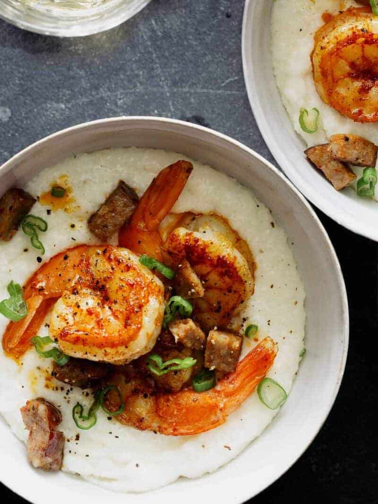

Odin Shrimp and Grits

Ingredients
White Cheddar Grits
- 1 cup white stone-ground grits
- 4 ounces shredded white cheddar
- 3 tbsp unsalted butter
- salt and pepper to taste
Shrimp
- 12 large shrimp, peeled and deveined with tails intact
- 1 lemon, juiced
- ▢2 tsp smoked paprika
- 1 tsp salt
- 1/2 tsp cumin
- 1/2 tsp black pepper
- 1/4 tsp cayenne pepper
- 2 minced garlic cloves
- 2 tbsp unsalted butter
- 1 andouille sausage, diced
- 1/4 cup chicken stock (water is fine)
Garnish
- 2 thinly sliced green onion
Instructions
Grits
- Bring 4 cups water to a boil. Generously salt water and stir in grits. Lower heat to medium-low and simmer mixture for 25 to 30 minutes, stirring frequently, until mixture is thick and creamy.
- Remove from heat and stir in cheese and butter until fully incorporated and melted. Season with salt and pepper.
Shrimp and Sausage
- Place shrimp, lemon juice, smoked paprika, salt, cumin, pepper, cayenne, and garlic into a mixing bowl and toss together. Set aside.
- Melt butter into a sauté pan over medium-high heat. Add sausage and brown for 2 to 3 minutes. Remove sausage from skillet and set aside.
- Add shrimp to skillet and sauté for about 3 minutes on each side. Deglaze pan with chicken stock (or water) and cover for 1 minute.
- Add sausage back to skillet and stir together.
- Remove shrimp and sausage mixture from heat and divide over each bowl of grits. Garnish with sliced green onions and serve.